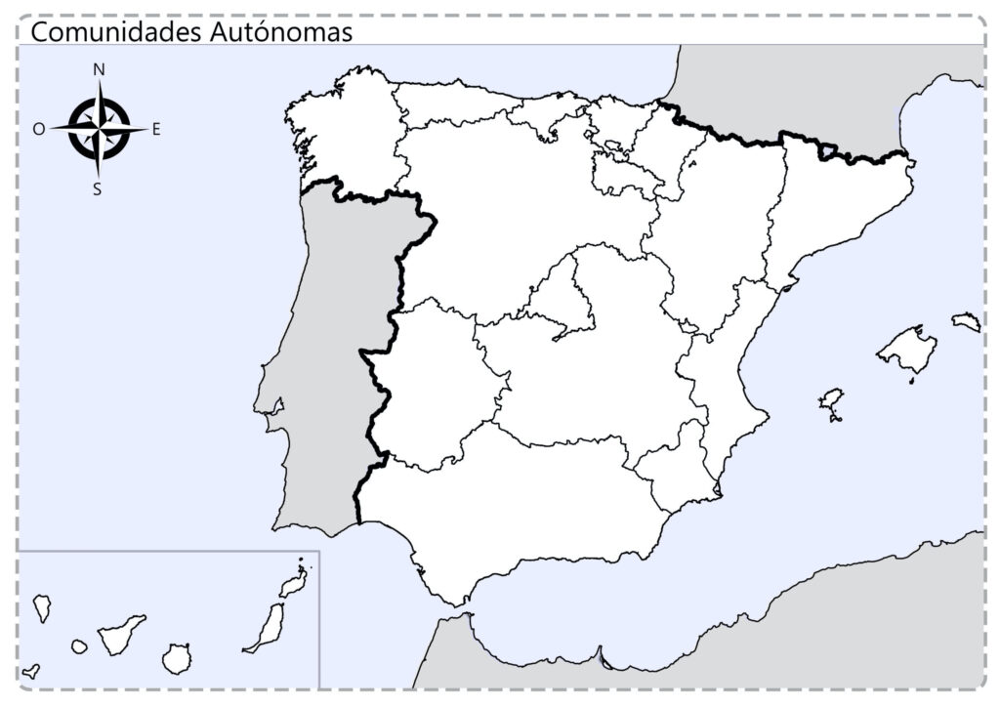
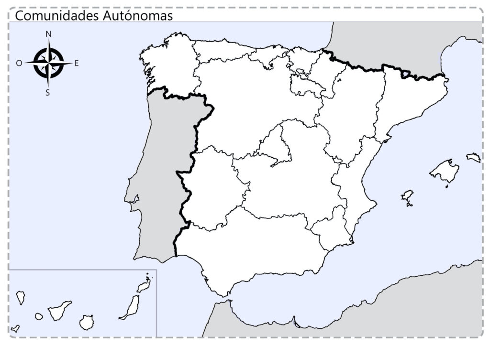

3
Haz clic en las lupas y completa los test.
{"typeGame":"Mapa","instructions":"","showMinimize":false,"showActiveAreas":false,"author":"","url":"../content/resources/20251118115311804SEF//Mapa-de-Espana-comunidades-autonomas-mudo-1024x724.jpg","authorImage":"","altImage":"","itinerary":{"showClue":false,"clueGame":"","percentageClue":40,"showCodeAccess":false,"codeAccess":"","messageCodeAccess":""},"points":[{"id":"p1649148523327","title":"Ceuta","type":0,"url":"../content/resources/20251118115311804SEF//Mapa-de-Espana-comunidades-autonomas-mudo-1024x724_1.jpg","video":"","x":0.46565934065934067,"y":0.8502730582524272,"x1":0,"y1":0,"points":[],"pointsd":[],"footer":"orientaciónandújar","author":"orientaciónandújar","alt":"","iVideo":0,"fVideo":0,"eText":"","iconType":60,"question":"","question_audio":"","toolTip":"","link":"","color":"#000000","fontSize":"14","map":{"id":"a1649148523327","pts":[{"id":"p998012097558","title":"","type":0,"url":"","video":"","x":0,"y":0,"x1":0,"y1":0,"points":[],"pointsd":[],"footer":"","author":"","alt":"","iVideo":0,"fVideo":0,"eText":"","iconType":0,"question":"","question_audio":"","toolTip":"","link":"","color":"#000000","fontSize":"14","map":{"id":"a998012097558","url":"","alt":"","author":"","pts":[]},"slides":[{"id":"s998012097558","title":"","url":"","author":"","alt":"","footer":""}],"tests":[],"activeSlide":0,"activeTest":0}],"url":"","alt":"","author":"","active":0},"slides":[{"id":"s1649148523327","title":"","url":"","author":"","alt":"","footer":""}],"tests":[],"activeSlide":0,"activeTest":0,"audio":""},{"id":"p1067461117001","title":"Melilla","type":0,"url":"../content/resources/20251118115311804SEF//Mapa-de-Espana-comunidades-autonomas-mudo-1024x724_2.jpg","video":"","x":0.5879120879120879,"y":0.8951759708737864,"x1":0,"y1":0,"points":[],"pointsd":[],"footer":"orientaciónandújar","author":"orientaciónandújar","alt":"","iVideo":0,"fVideo":0,"eText":"","iconType":85,"question":"","question_audio":"","toolTip":"","link":"","color":"#000000","fontSize":"14","map":{"id":"a1067461117001","pts":[{"id":"p1030193729966","title":"","type":0,"url":"","video":"","x":0,"y":0,"x1":0,"y1":0,"points":[],"pointsd":[],"footer":"","author":"","alt":"","iVideo":0,"fVideo":0,"eText":"","iconType":0,"question":"","question_audio":"","toolTip":"","link":"","color":"#000000","fontSize":"14","map":{"id":"a1030193729966","url":"","alt":"","author":"","pts":[]},"slides":[{"id":"s1030193729966","title":"","url":"","author":"","alt":"","footer":""}],"tests":[],"activeSlide":0,"activeTest":0}],"url":"","alt":"","author":"","active":0},"slides":[{"id":"s1067461117001","title":"","url":"","author":"","alt":"","footer":""}],"tests":[],"activeSlide":0,"activeTest":0,"audio":""}],"isScorm":0,"textButtonScorm":"Guardar la puntuación","repeatActivity":true,"weighted":100,"textAfter":"","evaluationG":4,"selectsGame":[{"type":0,"time":null,"numberOptions":4,"typeSelect":0,"msgHit":"","msgError":"","quextion":"¿Cómo se llama el territorio señalado?","options":["Ceutí","Melilla","Ceuta","África"],"solution":"B","percentageShow":35,"solutionQuestion":""}],"isNavigable":true,"showSolution":true,"timeShowSolution":3,"version":3,"percentajeIdentify":100,"percentajeShowQ":100,"percentajeQuestions":100,"autoShow":false,"autoAudio":true,"optionsNumber":0,"evaluation":false,"evaluationID":"20251115112050WAWCPA","id":"20251118115311804SEF","order":"","hideScoreBar":false,"hideAreas":false,"msgs":{"msgSubmit":"Enviar","msgIndicateWord":"Proporcione una palabra o expresión","msgClue":"¡Genial! La pista es:","msgErrors":"Errores","msgHits":"Aciertos","msgScore":"Puntuación","msgWeight":"Peso","msgMinimize":"Minimizar","msgMaximize":"Maximizar","msgFullScreen":"Pantalla Completa","msgNoImage":"Pregunta sin imágenes","msgSuccesses":"¡Correcto! | ¡Excelente! | ¡Genial! | ¡Muy bien! | ¡Perfecto!","msgFailures":"¡No era eso! | ¡Incorrecto! | ¡No es correcto! | ¡Lo sentimos! | ¡Error!","msgTryAgain":"Necesitas al menos %s% de respuestas correctas para obtener la información. Inténtalo de nuevo.","msgEndGameScore":"Antes de guardar la puntuación comience la partida.","msgScoreScorm":"La puntuación no se puede guardar porque esta página no forma parte de un paquete SCORM.","msgPoint":"Punto","msgAnswer":"Responder","msgOnlySaveScore":"¡Solo puede guardar la puntuación una vez!","msgOnlySave":"Solo puede guardar una vez","msgInformation":"Información","msgYouScore":"Su puntuación","msgOnlySaveAuto":"Su puntuación se guardará después de cada pregunta. Solo puede jugar una vez.","msgSaveAuto":"Su puntuación se guardará automáticamente después de cada pregunta.","msgSeveralScore":"Puede guardar la puntuación tantas veces como quiera","msgYouLastScore":"La última puntuación guardada es","msgActityComply":"Ya ha realizado esta actividad.","msgPlaySeveralTimes":"Puede realizar esta actividad cuantas veces quiera","msgClose":"Cerrar","msgPoints":"puntos","msgPointsA":"Puntos","msgQuestions":"Preguntas","msgAudio":"Audio","msgAccept":"Aceptar","msgYes":"Sí","msgNo":"No","msgShowAreas":"Mostrar áreas activas","msgShowTest":"Mostrar cuestionario","msgGoActivity":"Haz clic aquí para hacer esta actividad","msgSelectAnswers":"Select the correct options and click on the 'Reply' button.","msgCheksOptions":"Marca todas las opciones en el orden correcto y haz clic en 'Responder'.","msgWriteAnswer":"Escribe la palabra o frase correcta y haz clic en 'Responder'.","msgIdentify":"Identifica","msgSearch":"Buscar","msgClickOn":"Haz clic en","msgReviewContents":"Debes revisar el %s% de los contenidos de la actividad antes de completar el cuestionario.","msgScore10":"¡Todo está perfecto! ¿Quieres repetir esta actividad?","msgScore4":"No has superado esta prueba. Debes revisar sus contenidos e intentarlo de nuevo. ¿Quieres repetir esta actividad?","msgScore6":"¡Genial! Has superado la prueba, pero seguro que puedes mejorar. ¿Quieres repetir la actividad?","msgScore8":"¡Casi perfecto! Aún puedes hacerlo mejor. ¿Quieres repetir la actividad?","msgNotCorrect":"¡No es correcto! Has hecho clic en","msgNotCorrect1":"¡No es correcto! Has hecho clic en","msgNotCorrect2":"y la respuesta correcta es","msgNotCorrect3":"¡Prueba otra vez!","msgAllVisited":"¡Genial! Has visitado los puntos requeridos.","msgCompleteTest":"Puedes hacer la prueba.","msgPlayStart":"Pulse aquí para empezar","msgSubtitles":"Subtítulos","msgSelectSubtitles":"Selecciona un archivo de subtítulos. Formatos admitidos:","msgNumQuestions":"Número de preguntas","msgHome":"Inicio","msgReturn":"Volver","msgCheck":"Comprobar","msgUncompletedActivity":"Actividad no completada","msgSuccessfulActivity":"Actividad superada. Puntuación: %s","msgUnsuccessfulActivity":"Actividad no superada. Puntuación: %s","msgTypeGame":"Mapa"}}

 
orientaciónandújar
Su navegador no es compatible con esta herramienta.